滋賀県
Shiga Prefecture
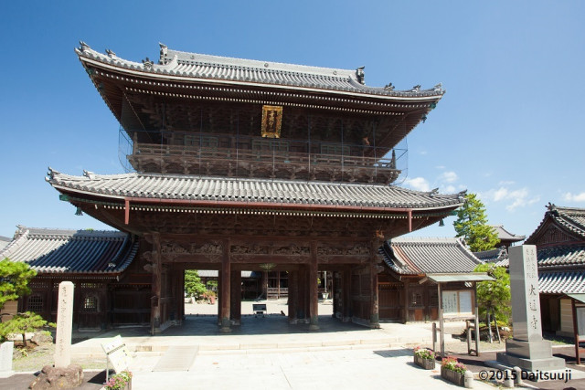

大通寺の牡丹に蝶
風景：長浜・大通寺の華麗な彫刻が施された本堂を背景に、大輪の牡丹と舞い遊ぶ蝶。
解説：「猪鹿蝶」の蝶を、長浜の名刹・大通寺の牡丹で再現。北近江の豊かな文化と、初夏の瑞々しい風景を重ね合わせます。
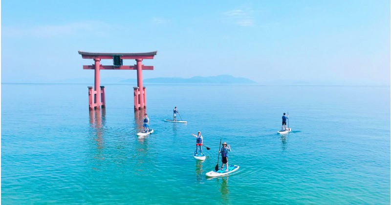
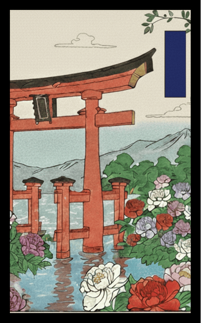
琵琶湖畔の牡丹に青短
風景：琵琶湖の青い湖面を背景に、湖畔の庭園に咲く色鮮やかな牡丹。
解説：湖からの風に揺れる牡丹に、涼しげな「青短」を添えます。水の青と花の色彩が調和する、滋賀ならではの美しさです。
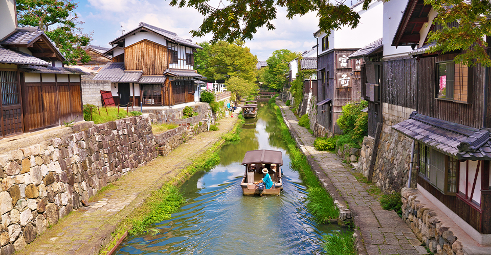
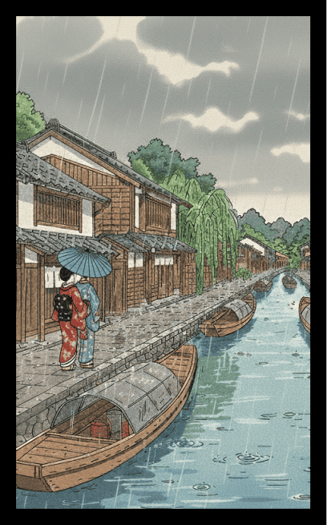
雨の近江八幡
風景：八幡堀（はちまんぼり）の古い町並みと、しっとりと雨に濡れる初夏の緑。
解説：水郷の町に降る雨が、牡丹の季節の情緒を引き立てます。近江商人の歴史が息づく静かな情景です。
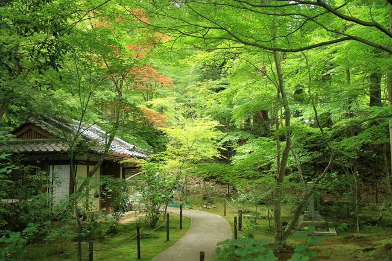
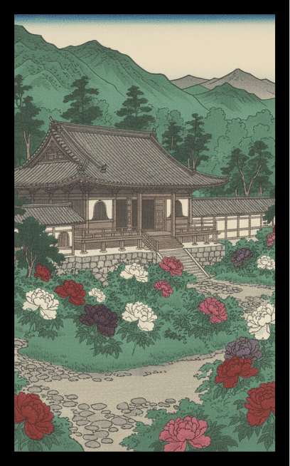
湖東三山の緑と牡丹
風景：西明寺・金剛輪寺・百済寺のいずれかの境内に咲く牡丹と、深い新緑。
解説：滋賀が誇る古刹の風格を、牡丹のカス札として表現。歴史ある建物の重厚さと、花の華やかさの対比を描きます。
6月
絵札を押すと
詳細が見れるぞ

琵琶湖に浮かぶ満月
風景：広大な琵琶湖の水平線から昇る巨大な満月と、波打ち際で揺れる芒。
解説：伝統的な「芒に月」を、近江八景の一つ「石山の秋月」のイメージで再構築。湖面に映る月明かりが、静謐な夜の滋賀を象徴する最高格の一枚です。
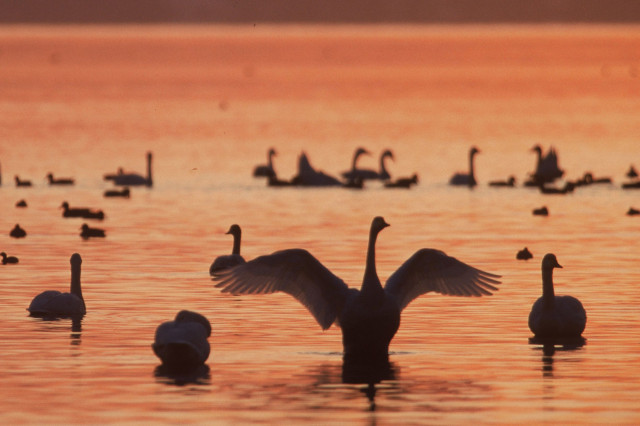
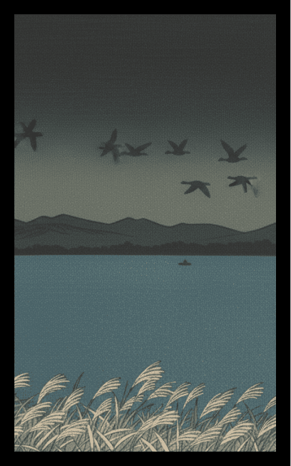
湖東の芒に雁
風景：湖東エリアの広大な野原に広がる芒の上を、列を成して飛んでいく雁の群れ。
解説：伝統的な「芒に雁」の構図を、滋賀の豊かな自然界のサイクルとして描写。秋の訪れを告げる渡り鳥の姿を描きます。
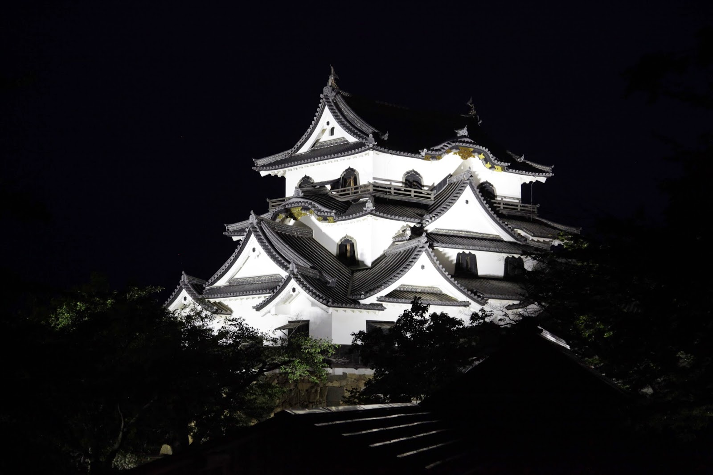
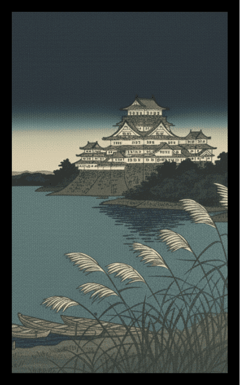
彦根城と芒
風景：秋風に揺れる芒の向こう側にそびえる、国宝・彦根城の天守。
解説：月明かりのない昼景、あるいは夕暮れ時の情景。芒の穂が白く光り、井伊家ゆかりの名城がどっしりと構える歴史的な風景です。
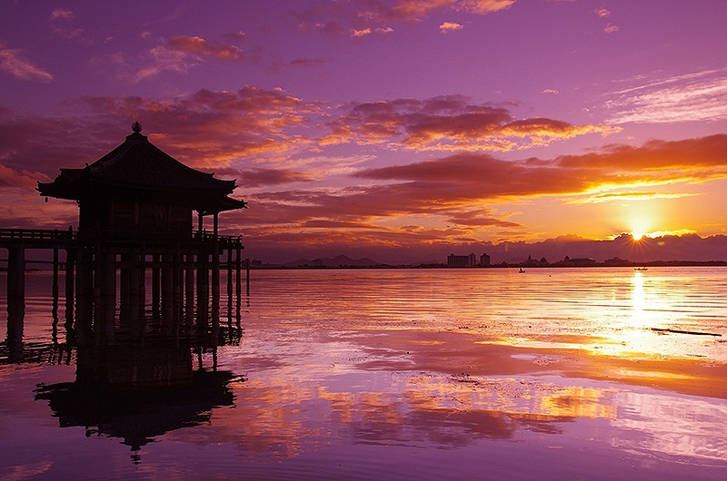
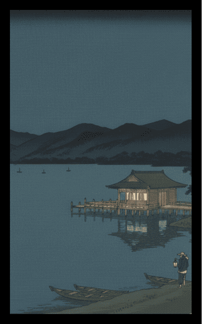
浮御堂の情景
風景：琵琶湖に突き出した満月寺・浮御堂。周囲の岸辺には芒が群生している。
解説：湖上に浮かぶ堂の静かな佇まいを強調。月を描かないことで、水郷・堅田（かたた）の独特な地形と芒の調和をストレートに表現します。
8月
絵札を押すと
詳細が見れるぞ